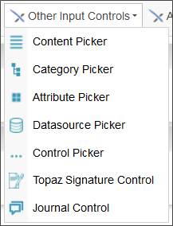
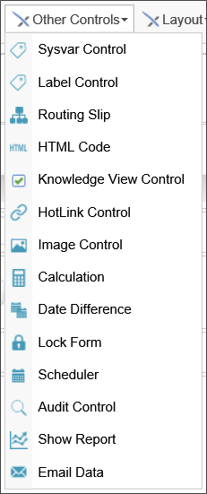

Details about the controls in this section are available in the Input Controls topic.
Details about the controls in this section are available in the Other Input Controls topic.


Details about the controls in this section are available in the Actions Controls topic.
Details about the controls in this section are available in the Other Controls topic.

Details about the controls in this section are available in the Layout Controls topic.

These controls implement Bootstrap Layout functionality for the Online Form Designer. These controls are designed primarily for use by individuals who are familiar with Bootstrap, and are not suitable for novice form designers. Detailed information about these controls are available in the Responsive Layout Controls topic.

Details about the controls in this section are available in the Array Controls topic.

Details about the controls in this section are available in the Attachment Controls topic.